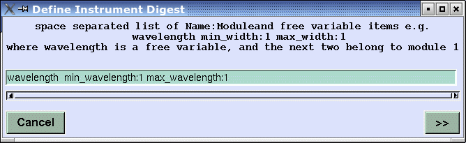
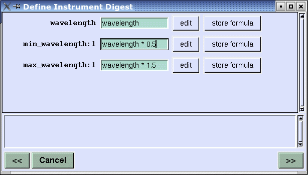
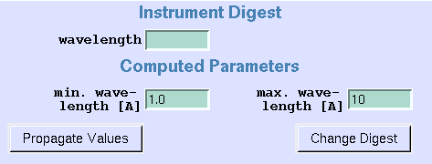

The instrument digest supports a better overview of varied parameters in simulation series. After defining an instrument most parameters normally will be constant in a series of simulations, but a handfull of parameters from different modules are to be varied. The digest comprises parameters easily selected by clicking on parameter labels. Values for these parameters may be entered in the digest view, or may be computed from other parameters by formula. First you load or define an instrument, then you define a digest with the Configure / Define Instrument Digest entry of the main menu bar. Next you select the parameters for the digest view. The easiest way to input exisiting module parameters is by clicking on parameter labels in module views, which adds a string like min_wavelength:1 to the input line, selecting parameter min_wavelength from the first module. You may introduce new parameters, and compute parameter values from other parameters by formula, too.

Let's say you have a new parameter wavelength, which will be used to compute min_wavelength from module 1 and max_wavelength from module 1. Pressing the >> button will show the following window, where you enter the formulas for min_wavelength and max_wavelength.

The digest view looks like this:

"Propagate Values" starts necessary computations, and propagates the values of the digest view to module parameter values. (This is done automatically if you start a simulation, too). "Change Digest" brings the previous entry window back.
Last modified: 2005-04-15